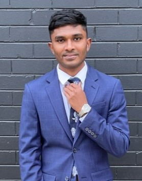
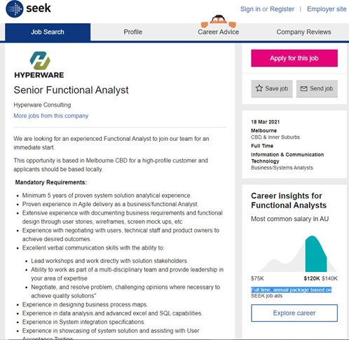
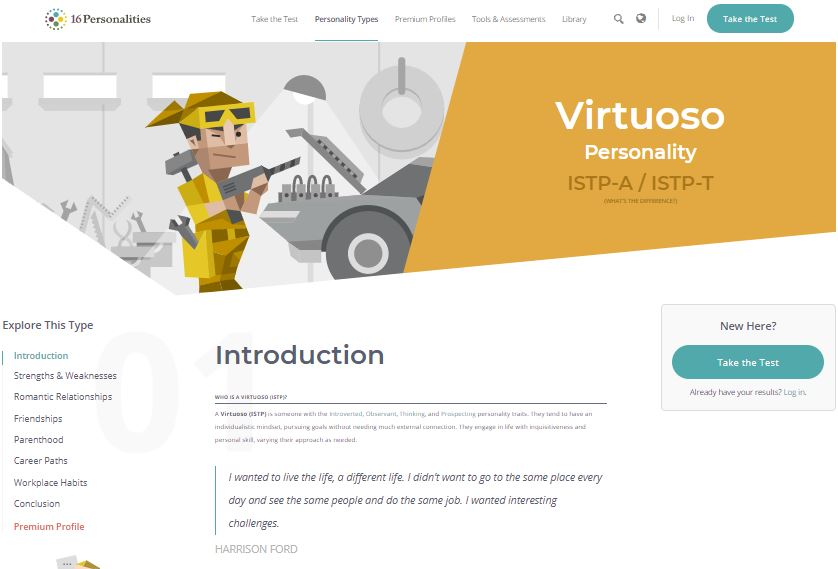
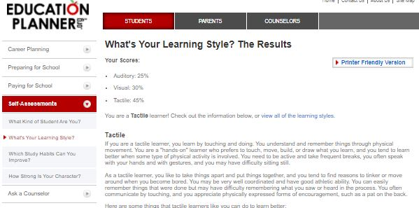
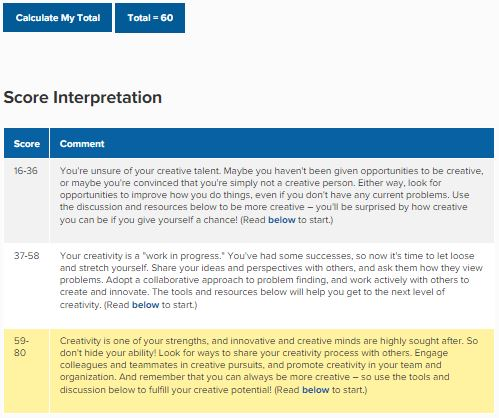

Personal Information
My name is Ahmed Jazeel. I am an international student from Sri Lanka.
I can speak three languages fluently English, Tamil and Sinhalese.
I came to Melbourne 3 years ago to pursue my bachelor’s in business management.
However, I have always known that I had been passionate about IT.
I subsequently switched to pursue a bachelor’s in business information systems (Applied).
I was extremely fortunate to complete my industry placement successfully at RMIT ITS.
I am currently completing the final year of my bachelor’s degree. Something that I am extremely passionate about is basketball.
I grew up playing basketball in school and it has helped me through the ups and downs of life.
I always find the time during the weekends to play pick-up games and I also actively follow the NBA.
Interest in IT
What is your interest in IT? When did your interest in IT start?
Mainly my interest in IT comes from fascination and curiosity. Technology is all around us and it makes the world tick.
It helps make the inefficient efficient and helps bring people together. My interest in IT started in grade 4 when I would spend all day paying Miniclip games and pinball on a Windows XP operating system.
I have always been drawn to the problem-solving aspect of technology.
The thought process of figuring out what went wrong, why it went wrong and what I can do to fix it. When you figure out how to fix an issue the result can be very rewarding.
Was there a particular event or person that sparked your interest? Outline your IT experience if (any)
I to this day remember the one incident that peaked my interest. The computer that I used suddenly stopped working when I was in grade 5 and I just could not understand why.
I went along with my dad to the repair shop, and I was so fascinated by the intricate machinery inside, and the technician was nice enough to show me how he repaired the machine. He proceeded by changing out the bad power supply unit.
Ever since that day I have broken my computer several times and through trial and error I began to have a knack for repairs.
I have worked as a part time IT technician back home in Sri Lanka. The job mainly consisted of maintainance of computer, hardware/software troubleshooting and technical advice for clients. I have also worked as an Application Support Analyst for RMIT ITS where the scope was significantly advanced. I was dealing with several customers providing support for university applications. To name a few Canvas, Collaborate Ultra, Blackboard and Echo 360.
Why did you choose to come to RMIT?
I chose RMIT because of its recognition worldwide and due its diverse culture. RMIT also heavily relies on industry connections.
The university focusses on producing graduates who are job ready and have a real world understanding of what the industry is like and what is expected.
Another factor that contributed for me in terms of choosing RMIT was the location of the university and the convenience of access.
The facilities and infrastructure provided at RMIT are second to none in comparison to the other universities in Melbourne.
What do you expect to learn during your studies?
During my studies I expected to learn as much as I can about the culture and values of the diverse backgrounds of students who frequent the university.
With several group assignments the opportunities for group work have significantly helped me be culturally aware.
I also wanted to be job ready when I completed my university education. As of now with the completion of the WIL program I have been able to get a good understanding of the industry and what is expected from an IT professional.
I hope to keep learning and refine my existing skills to be the best version of myself.
Ideal Job
My Ideal job at the moment would be to become a Senior Functional Analyst.

Visit the job listing
This position interests me because I have had the opportunity to work alongside RMIT's functional analysts and I have always loved how they have a practical approach to providing solutions.
I would love to spend my time analyzing existing systems and put in place permanent solutions.
I also like that this role comes with the opportunity to lead teams and delegate.
This job requires a minimum of 5 years of experience as functional analyst and agile delivery.
Some of the job requirements are a great technical understanding of business process maps, advanced excel and SQL knowledge, documentation, good leadership skills and good communication skills.Additionally, experience in user acceptance testing, system integration specifications, experience in delivering business intelligence projects and working with government organizations is crucial.
As of now, I have an understanding of agile ways of working. I also have an understanding of producing busines process maps, advanced competency in Excel and SQL.
I have also worked on creating support documentation. I believe I have good leadership skills and communication skills which I hope to refine in the coming years. The WIL program at RMIT without a doubt made realise the importance of having these skills and having the opportunity to use these skills in the industry defintely helped me refine them.
My communication skills and leadership skills also significantly improved due to daily customer interactions.
I hope to start off with a similar job that I had at RMIT. Which was working as an Application Support Analyst.
I hope to learn and get more exposed to other platforms that are used in the industry.
I also want to get a great understanding of how things work on the back end. This repetition I belive will help me become more confident in what I do and further help me mature and refine my skills making me an ideal candidate for my dream job in the future.
Personal Profile
Myers-Briggs test

Find out more here
Learning Style Quiz

Find out more here
Creativity Test

Find out more here
What do these test results mean to you?
These results have given me so much insight about my attributes and could not be any truer.
Specifically, now that I have read up on the personality traits of a being a virtuoso, I explore the world with my hands and eyes examining the world around me with rationalism and spirited curiosity.
The learning style test reiterated what I had known all along which was that I prefer leaning through touch. The creativity test reiterated that I have to open up more and share my ideas and be more collaborative.
Although these tests may not 100% reflect my true nature it gives me an opportunity to learn, reflect, and reexamine my approach to life.
How do you think these results may influence your behavior in a team?
I would reflect on the strengths and weaknesses from the Myers Briggs test. These results will definitely change my approach in terms of collaborating with my teammates.
For instance, as per the personality traits it states that I could be stubborn and dislike commitment. I must keep this in mind and be more flexible and be more committed with my teammates.
The creativity quiz made me realize that I must be more open with my ideas and have a collaborative approach for better outcomes with my teammates.
Lastly, I can also communicate to my teammates that I’m a tactile learner and also ask what their learning styles are and develop an approach that would benefit the entire team.
How should you take this into account when forming a team?
It would be best if I can find teammates that have similar personality traits and charactertics. However, in the real world it is crucial to have an understanding to compromise and work with what you have and every individual cohesively.
Project Idea
Motivation
In today’s world, we see a significant increase in computer use. With COVID-19 still not under control, the need for physical distancing has increased more than ever.
Due to the increased use of technologies such as video conferencing the demand for computers and laptops has increased substantially.
‘79.4 million units in the fourth quarter of 2020, a 10.7% increase from the fourth quarter of 2019’ (Gartner 2021, para. 1). With that being said it is evident that there is an increase in demand for Computer/Laptop repairs.
‘Over the next 10 years, it is expected the US will need 77,200 computer repair technicians. That number is based on 72,100 additional computer repair technicians’ (Sokanu Interactive 2021, para. 1).
When COVID-19 was at its peak the world went into lockdown and some parts of the world is still in lockdown. This prevented potential customers from getting their computers and laptops repaired due to logistical issues. Shops being closed or technicians being too far away.
There is a gap in the market for a tool that can diagnose issues provide fixes or suggestions.
Description
The product that I am interested in producing is a universal USB/ Type C supported flash drive that can be plugged into any computer or laptop that supports this feature, almost all computers have the capabilities to support USB or Type C products.
If a laptop or computer is broken the customer should be able to purchase this flash drive plug it in and the device will run a diagnostic brute force even if the computer is frozen due to malware or any other hardware issue. If it is a software issue the product should be able to identify it and automatically fix the issue or provide steps to do it manually.
The product will also have a mobile app that will pair via Bluetooth in the event if the computer is completely unresponsive. The mobile app will then provide step-by-step instructions to go about resolving the issue.
If the issue is a hardware problem the diagnostics software on the flash drive will be able to identify the defective part.
The customer will be able to access the details on which part needs to be replaced which can be purchased via the parts store provided by the company or suggest third party vendors to purchase the defective parts. The product will also give a step-by-step guide to the customers on how to do the repairs themselves without needing to visit a technician.
The product will also come with 24/7 technical support where technicians would be on standby to help customers using a step by step if they have issues resolving the issues themselves.
The device will also come with an offline database of hardware drivers, operating system recovery iso images, and a suite of software that can be installed to prevent software issues from arising in the future.
Tools and technologies
Internet speeds of over 100 Mbps will be required to communicate across servers to troubleshoot advanced technical issues by the company.
Infrastructure to handle these speeds will be required eg: High-end routers. Considering that the company is a startup it will need to have access to cloud services such as Amazon Web services, Microsoft Azure or VMware to store data in a secure environment. Computers with great processing speeds will be required by the technicians to process analyze queries.
Software and hardware technicians will be needed to work in shifts to provide support 24/7. Access to ticketing platforms such as ServiceNow and Jira will be crucial. Close relationships with vendors will be needed to maintain to get subsidized prices on parts.
Skills required
Highly skilled Engineers and Functional analysts will be needed to create knowledge bases and use cases. Programmers will be required to create software that would work seamlessly identifying common problems and developing scripts that can be automatically run to resolve issues.
Technicians will be needed to document and analyze solutions for new arising bugs. Significant costs will be expected to have the hardware infrastructure with exceptional processing speeds for day-to-day company operations. The market is filled with Engineers, Functional analysts, Programmers, and technicians due to the adverse impacts of COVID-19.
Vendors have made it extremely easy for a potential customer to purchase hardware on various payment plans. However, given that this is a startup there is a significant cost aspect to consider. To cover these costs, the price for the service offered to the customer could be high which would therefore decrease the demand for the product.
Outcome
A positive outcome from this project would mean that customers would have the ease of access to purchase this flash drive plug-and-play to aid in resolving common hardware or software issues.
This would also help customers get the help they need urgently with COVID-19 rampaging wild across different parts of the world since no physical interaction between technicians and the customers will be needed. Computer repairs will be much less intimidating for customers, the demand for the need for physical stores and technicians will decrease.
Time is valuable in today’s industry every minute counts and having this technology can significantly help customers or companies operate in the most efficient manner possible.
References
1. Gartner 2021, Gartner Says Worldwide PC Shipments Grew 10.7% in Fourth Quarter of 2020 and 4.8% for the Year, Gartner, viewed 28 March 2021, < https://www.gartner.com/en/newsroom/press-releases/2021-01-11-gartner-says-worldwide-pc-shipments-grew-10-point-7-percent-in-the-fourth-quarter-of-2020-and-4-point-8-percent-for-the-year#:~:text=Continued%20Consumer%20Demand%20Results%20in,preliminary%20results%20by%20Gartner%2C%20Inc.>
2. Sokanu Interactive 2021, The job market for computer repair technicians in the United States, Sokanu Interactive , viewed 28 March 2021, < https://www.careerexplorer.com/careers/computer-repair-technician/job-market/ >